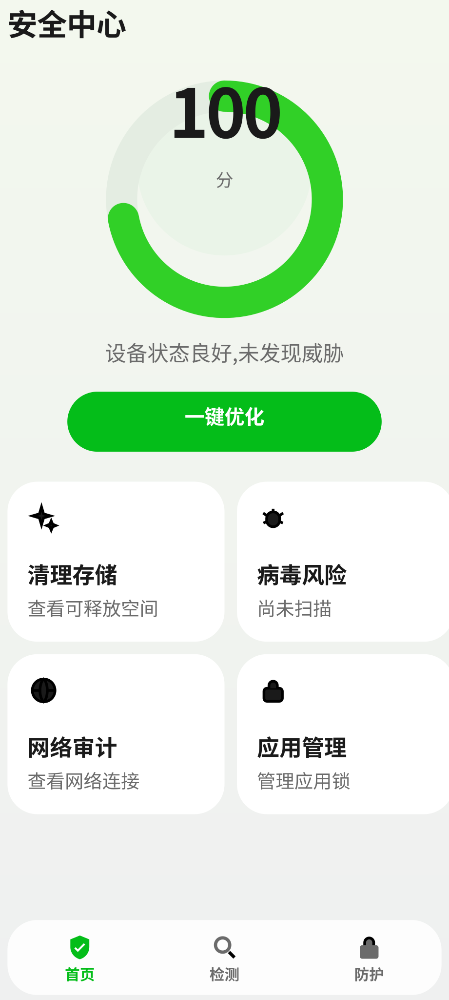
app/src/main/res/layout/activity_main.xml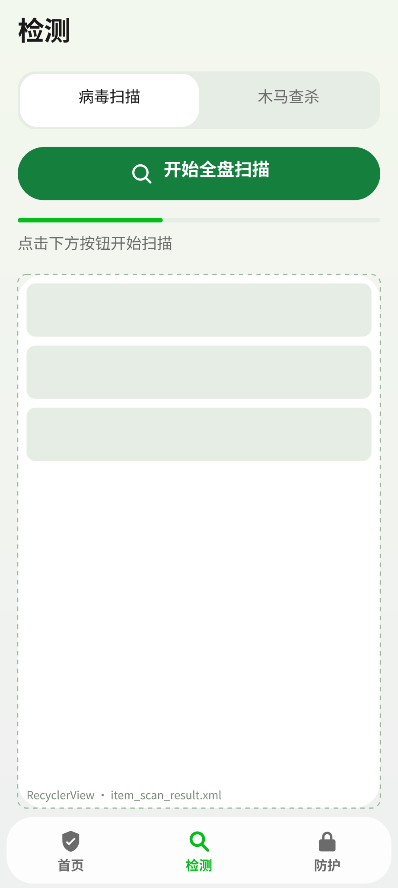
app/src/main/res/layout/activity_main.xml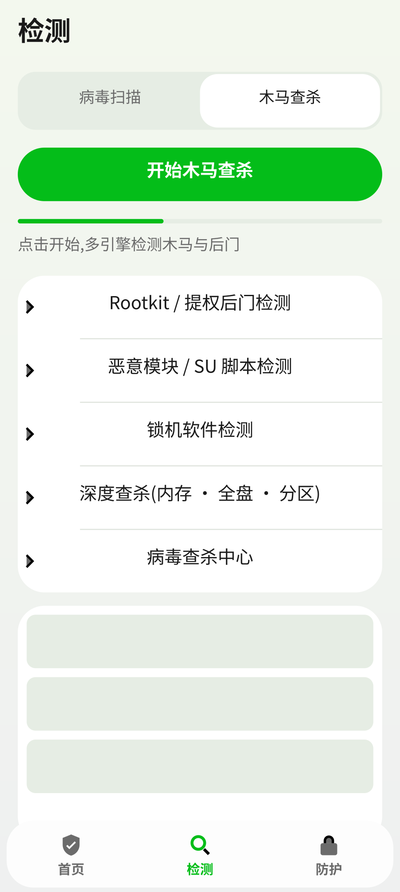
app/src/main/res/layout/activity_main.xml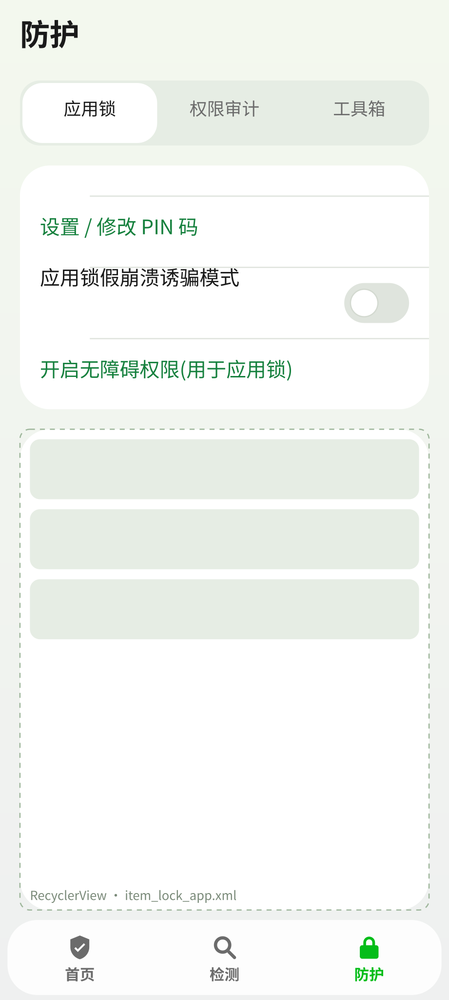
app/src/main/res/layout/activity_main.xml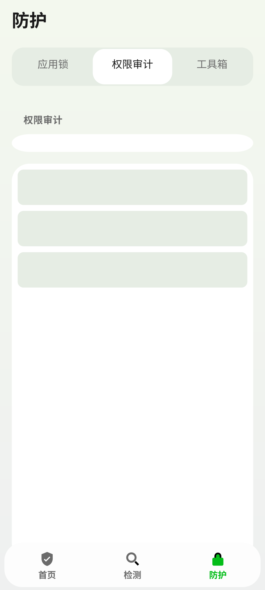
app/src/main/res/layout/activity_main.xml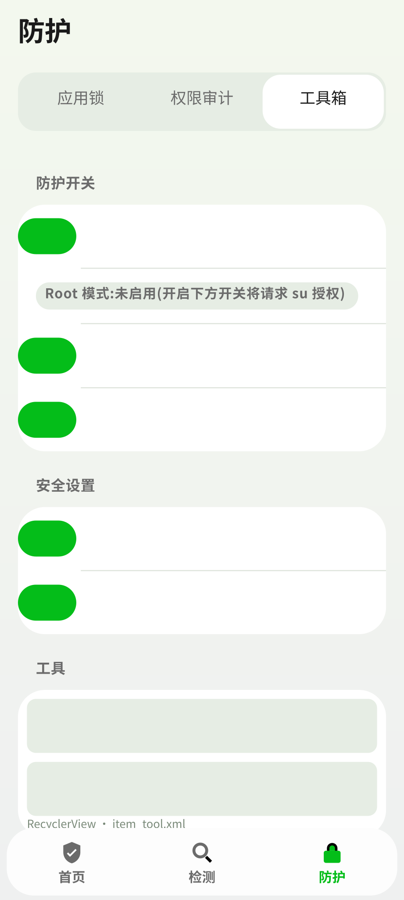
app/src/main/res/layout/activity_main.xml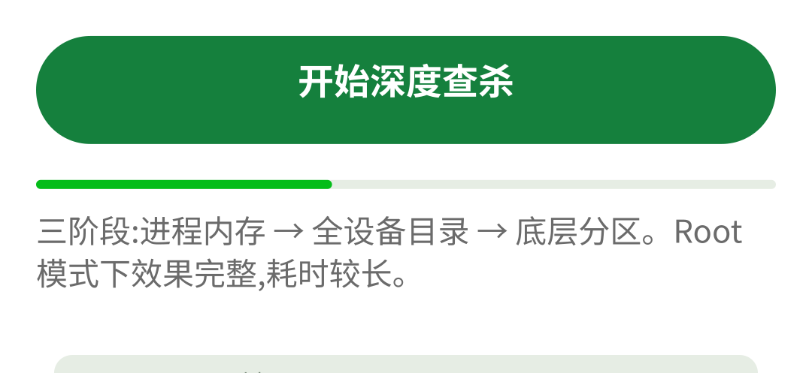
app/src/main/res/layout/activity_deep_scan.xml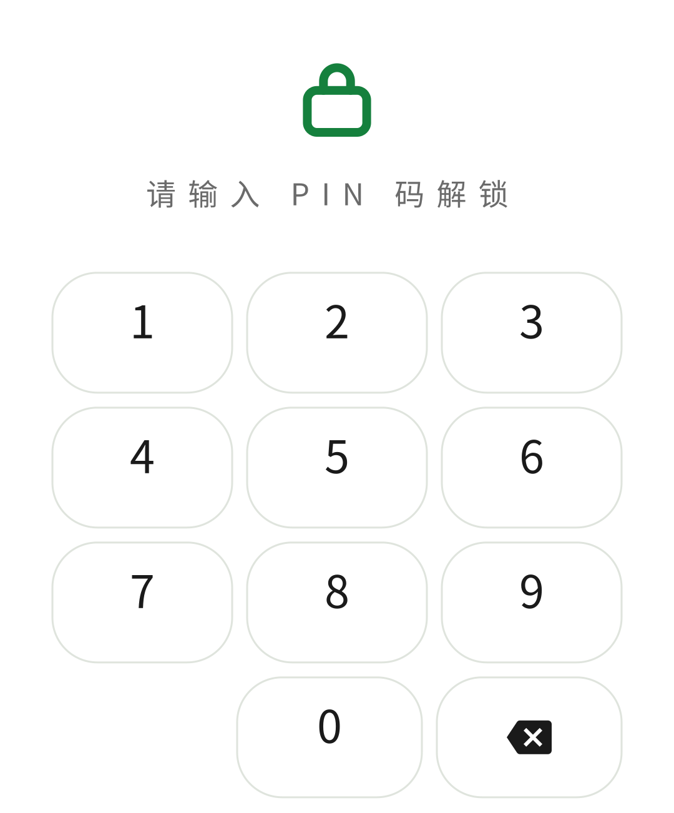
app/src/main/res/layout/activity_lock.xml
app/src/main/res/layout/activity_result_list.xml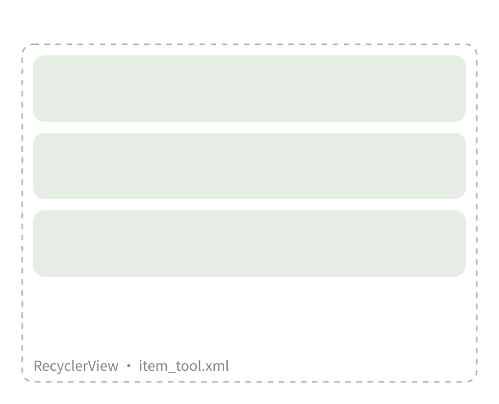
app/src/main/res/layout/activity_virus_center.xml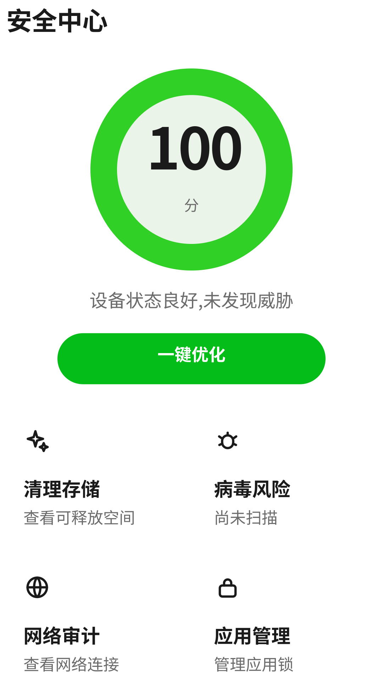
app/src/main/res/layout/fragment_dashboard.xml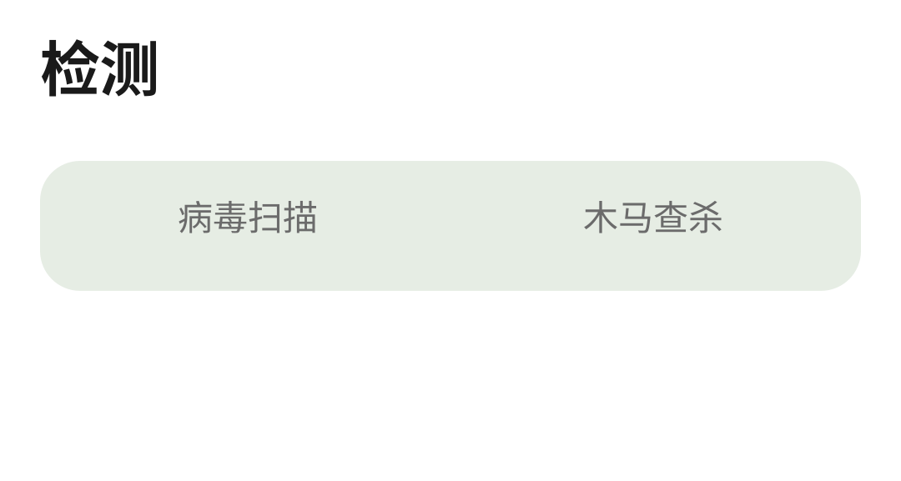
app/src/main/res/layout/fragment_detect.xml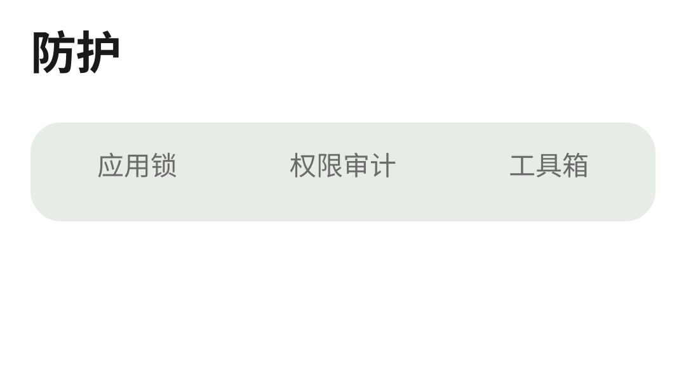
app/src/main/res/layout/fragment_protect.xml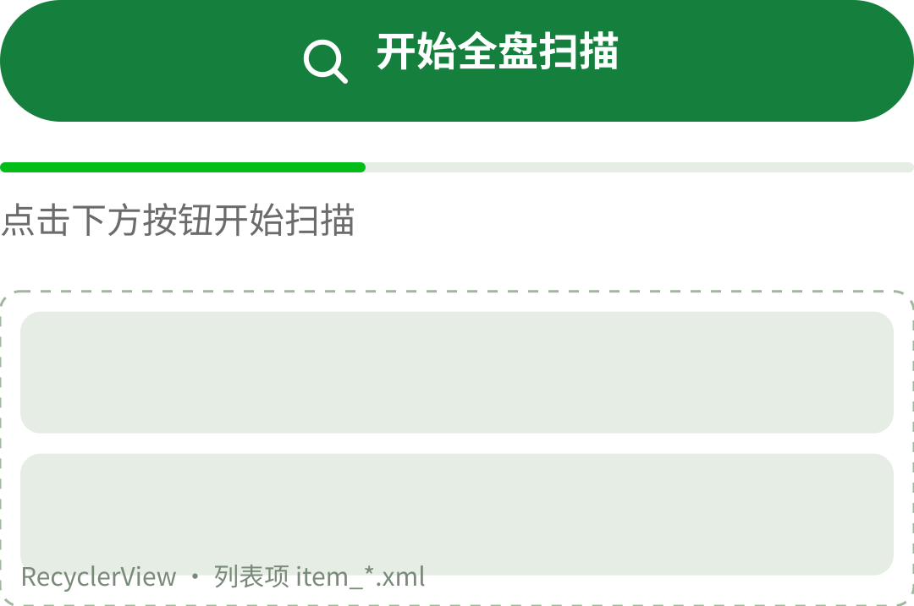
app/src/main/res/layout/fragment_scanner.xml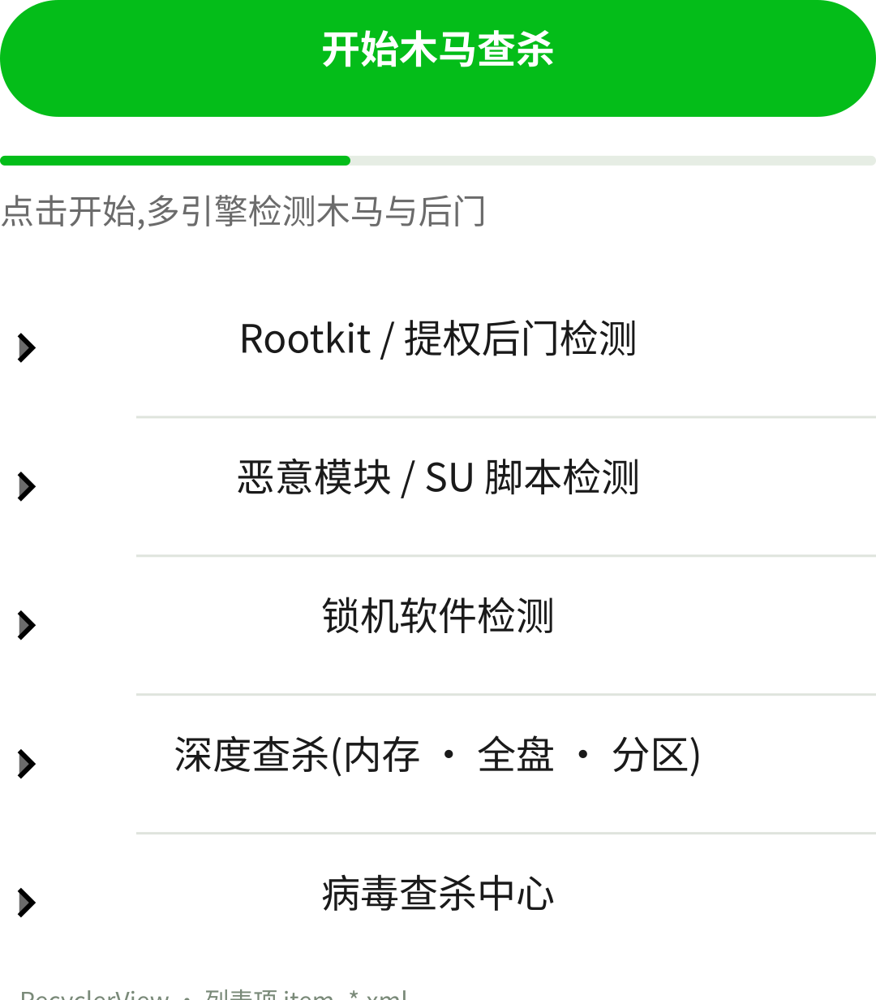
app/src/main/res/layout/fragment_trojan.xml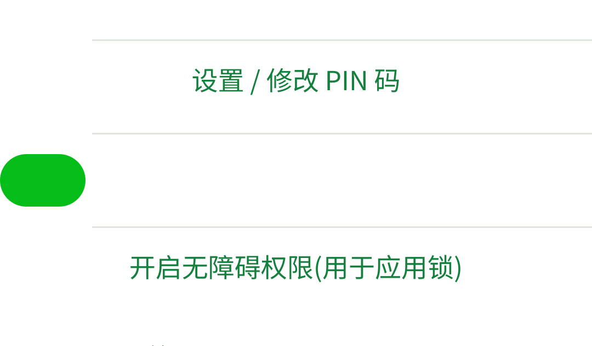
app/src/main/res/layout/fragment_app_lock.xmlapp/src/main/res/layout/fragment_permission_audit.xml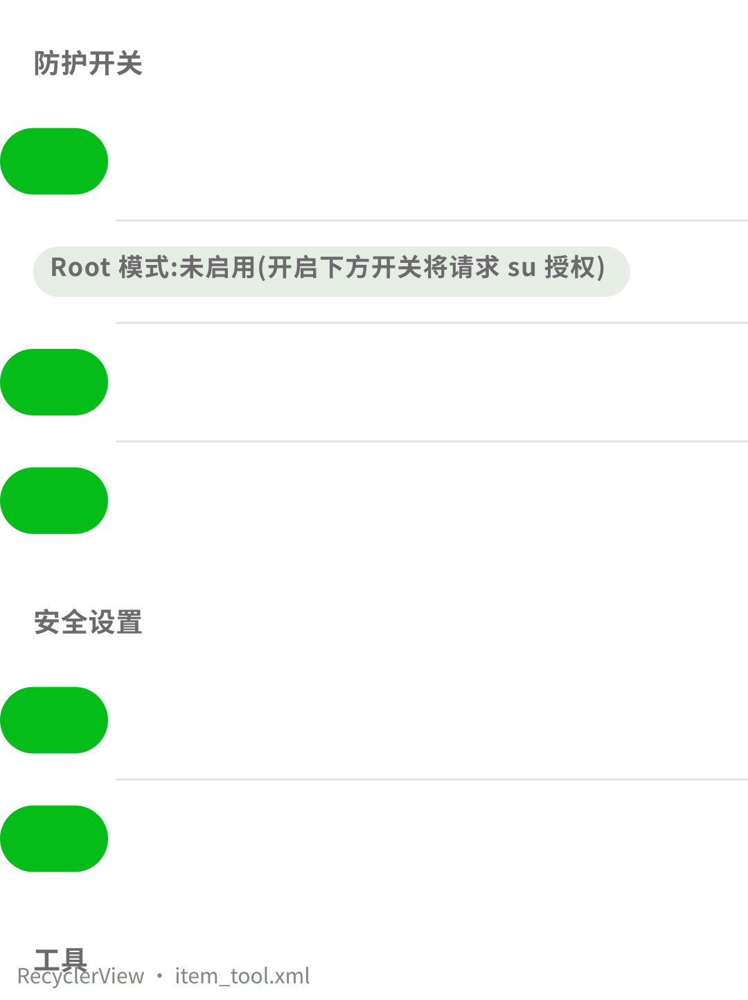
app/src/main/res/layout/fragment_tools.xml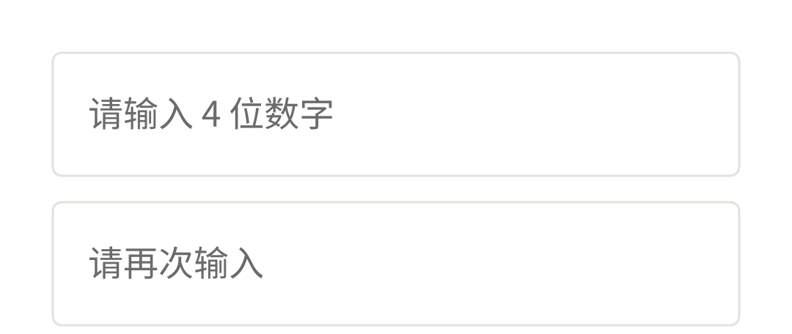
app/src/main/res/layout/dialog_set_pin.xmlapp/src/main/res/layout/widget_security.xmlapp/src/main/res/layout/item_audit.xmlapp/src/main/res/layout/item_lock_app.xmlapp/src/main/res/layout/item_scan_result.xmlapp/src/main/res/layout/item_tool.xmlapp/src/main/res/layout/item_trojan.xml